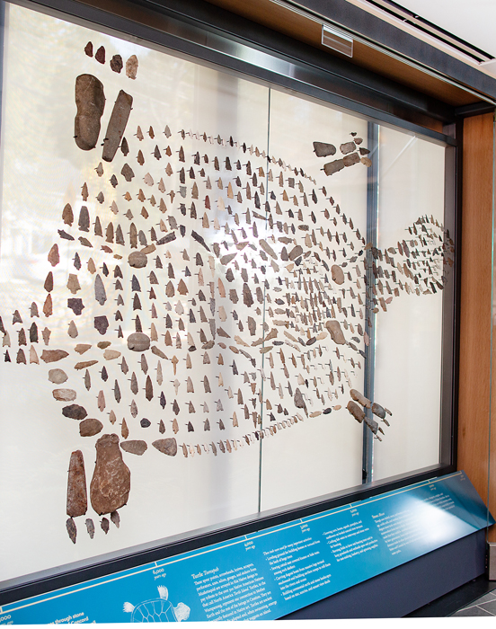

Early 19 th century tour point 2
FULL SCRIPT: The land on which you stand was, for thousands of native families, called Musketaquid, meaning “grassy plain” in Algonquian. Egg rock, an important landmark in Musketaquid, is just a short trip downstream from the riverbank where we stand now, located where the Sudbury and Assabet rivers conjoin to form the Concord River.
[trip begins] The Nipmuc and Massachusett peoples used egg rock as a meeting place and many Concord locals have found artifacts buried in the soil over the years, with dates showing native people passing through and inhabiting the area around egg rock at least 10,000 years ago.
 One of the artifacts found was a fine axe head that has been dated to 6,000-3,000 Before the Present (or BP) (the late archaic period) which was probably used for skinning animals. When it was in use, it may have looked like this axe which was handmade by Jonathan Perry in